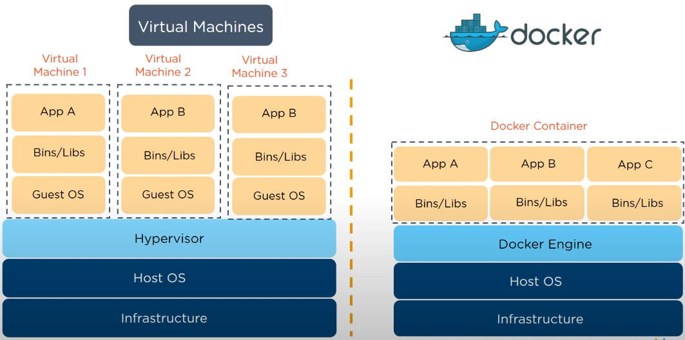

Why learn Docker?
Docker seems to be the industry standard development organisation tool for version control among other things. I will start by getting more information on what it is using
Docker Tutorial for Beginners [2021] and
this docker tutorial. expand list if can find more.
| Virtual Machine |
Container |
| Abstraction of a machine hardware |
An isolated environment for running applications |
| Why use virtual machines? Two apps run on two "virtual machines" have isolated environment. |
Why do we need containers? Each VM needs full-blown OS which is resource intensive and slow to start. |
 Hypervisor - Creates and manage virtual machines
Docker uses a Client server architecture, using a restful API.
How's it different from git?
Git is for version control, e.g. for textfiles. You build a docker container from a "dockerfile" (which is a textfile). This "dockerfile" is placed in a directory with many other files and folders. So if you put this directory, where the dockerfile is
located in, into a git repository, then everyone who has access to it, can build the same docker container, with the same configurations and everything. is that what you mean? So, the docker container is a "building" and the DOCKER-repository
is a market where you can download already built buildings (images), from that you can run a virtual machine/container. And the files in the GIT-repository (this is like a big archive for e.g. documents) are the "construction plans".
You "share" the different version of the "construction plans" via git, so everyone can build every version of the building.
Example Workflow:
- git pull - pull the "construction - instructions" from git repository (e.g. dockerfile)
- docker build - build the docker image from that dockerfile-instructions
- docker push myDockerRepo/myDockerImage:latest - push the newly built docker image into the DOCKER repository (NOT the git-repository)
In your production environment:
- docker pull myDockerRepo/myDockerImage:latest - pull the latest docker image from the DOCKER-repository
- docker run - run a new containerized instance (basically a VirtualMachine) FROM the docker image
Stackoverflow
What’s the difference between Kubernetes and Docker?
While it’s common to compare Kubernetes with Docker, a more apt comparison is Kubernetes vs Docker Swarm. Docker Swarm is Docker’s orchestration technology that focuses on clustering for Docker containers – tightly integrated into the Docker ecosystem
and using its own API.
A fundamental difference between Kubernetes and Docker is that Kubernetes is meant to run across a cluster while Docker runs on a single node. Kubernetes is more extensive than Docker
Swarm and is meant to coordinate clusters of nodes at scale in production in an efficient manner. Kubernetes pods – scheduling units that can contain one or more containers in the Kubernetes ecosystem – are distributed among nodes
to provide high availability.
- Make your infrastructure more robust and your app more highly available. Your app will remain online, even if some of the nodes go offline.
- Make your application more scalable. If your app starts to get a lot more load and you need to scale out to be able to provide a better user experience, it’s simple to spin up more containers or add more nodes to your Kubernetes
cluster.
- Kubernetes and Docker work together. Docker provides an open standard for packaging and distributing containerised applications. Using Docker, you can build and run containers, and store and share container images. You can easily
run a Docker build on a Kubernetes cluster, but Kubernetes itself is not a complete solution. To optimise Kubernetes in production, implement additional tools and services to manage security, governance, identity and access, along
with continuous integration/continuous deployment (CI/CD) workflows and other DevOps practices.
- From
Microsoft Azure
Linux
Linux needs to be learned in order to troubleshoot docker issues. Is a case sensitive operating system. Everything is a file (Directories, programs etc). Linux distributions are different versions of linux. e.g.
| Windows |
Linux |
| |
|
|
Bin = binarys/programs. Boot = files boot. Dev = Devices (files needed to access devices). Etc = editable text configuration (config files). Home = user directory. Root = home directory of root user. Lib = library files. Var =
for frequently changing files e.g. log files. Proc = file for running processes |
Linux Commands Description Echo Console print Pwd Print working directory. See where you are in directory Ls List files in directory. Cd Navigate to directory Cd ~ Navigate to home directory Mkdir Make directory Touch Create File Mv Move or rename file
Rm Remove file Rm -r Remove folder and all files in folder Nano Basic text editor for Cat "Concatenate" but Cat can show file contents Head/Tail First/Last few lines of a file